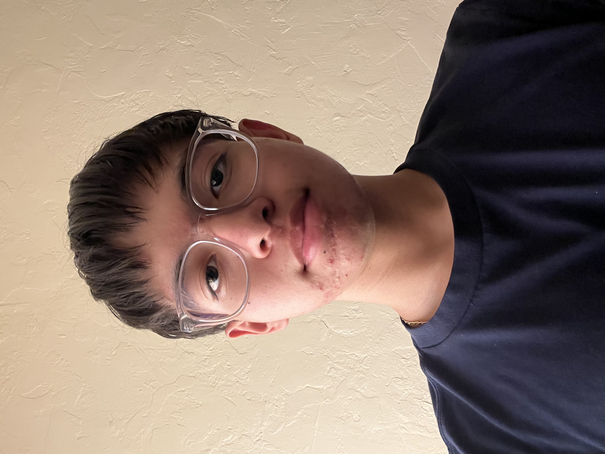

Welcome to My Personal Website
I am Mario Gomez


I am a rising senior at North High School. I am also a current student at All Star Code, a coding bootcamp that teaches students important skills in computer science and programming. I am passionate about technology and enjoy learning new programming languages and frameworks. In my free time, I like to work on personal coding projects and develop my own video games.
Some of my interests include participating in game jams, playing guitar, reading science fiction novels, and creating coding projects such as a program that calculates the empirical formula for a chemical compound. The main similarity between these interests is the fact that I genuinely enjoy doing them and always strive to improve.
I was born in a small city in Mexico, where I then moved to America at the age of 5. To this day I still remember the calm and peaceful environment of my hometown, which is a stark contrast to the busy and bustling city life I experience now. I am grateful for the experiences and opportunities that both places have provided me, and they have shaped me into the person I am today.
9th Grade
10th Grade
11th Grade
Here are some of the extracurricular activities I have been involved in:
If you would like to get in touch with me, please feel free to reach out via email or connect with me on LinkedIn.